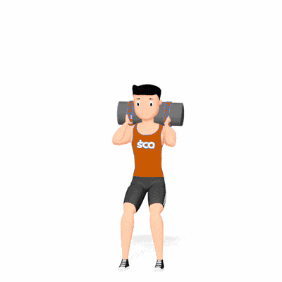

Salto com Sandbag

Exercício de CrossFit que fortalece quadríceps, glúteos e panturrilhas, desenvolvendo potência, resistência e coordenação com sobrecarga instável. Indicado para praticantes de nível intermediário e avançado.
Ficha Técnica
Tipo: CrossFit
Grupo Muscular: Perna
Aparelho: Nenhum
Músculos: Nenhum
Como realizar
- Apoie o sandbag sobre os ombros e segure firme com ambas as mãos;
- Fique em pé com pés afastados na largura dos ombros;
- Flexione os joelhos e desça o quadril para preparar o salto;
- Impulsione o corpo para cima, estendendo joelhos e quadris com força;
- Aterre suavemente, flexionando os joelhos para absorver o impacto e repita o movimento.
 RC STORE
RC STORE